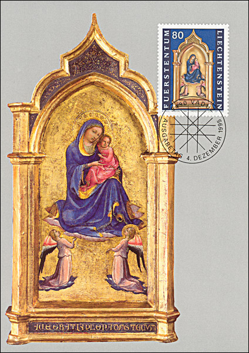
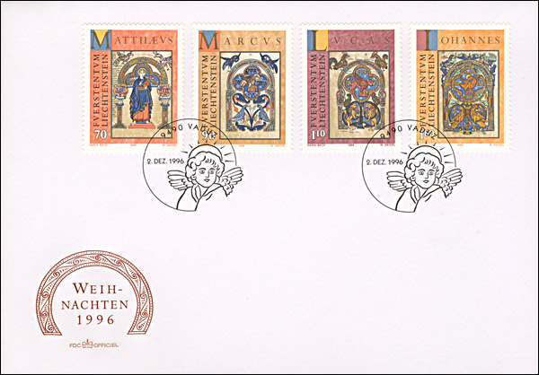
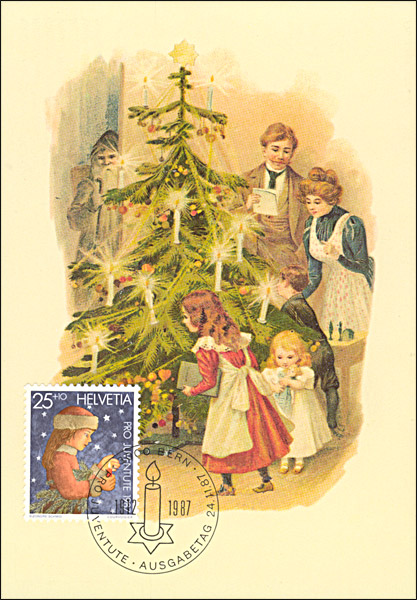
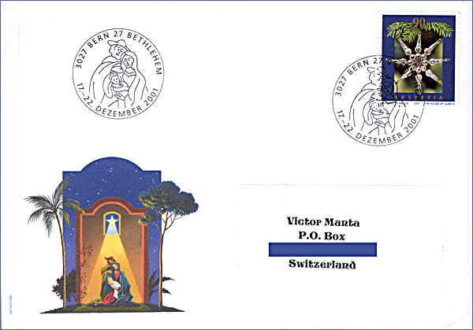
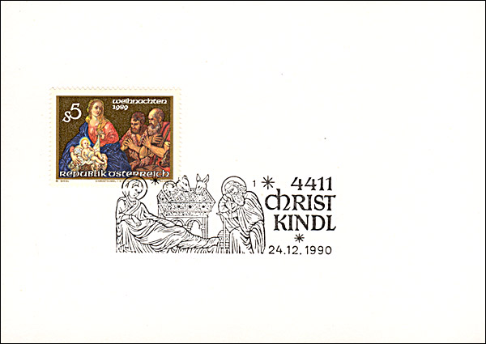
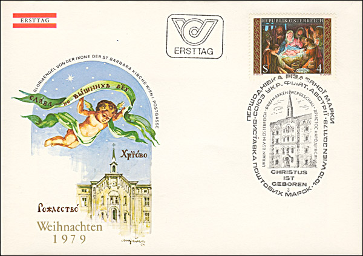
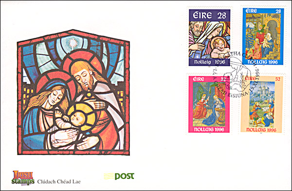
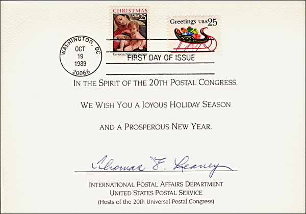

|
Created 12/12/04. Revised:
12/04/08. Copyright © 2004 - 2005 by Victor Manta, Switzerland. All rights reserved in all countries. |
|
I have put together on two consecutive pages some of the nicest cards and covers dedicated to Christmas that I have found in my collection. The covers and cards should be rather self-explanatory, and for this reason the comments will be rather short. I have compressed the images of this page less then usually in order to reproduce the works in a better quality. Sorry for eventually longer download times.
 Liechtenstein, Christmas Dec. 4, 1995. Paintings by Lorenzo Monaco. Maria with Child and Two Angels. Scott 1060-1062.
 Liechtenstein, Christmas Dec. 2, 1996. Illuminated manuscripts, symbols of the Evangelists. Scott 1092 - 1095.
 Switzerland, Nov. 24. Christmas. For the Pro Juventute Foundation. Scott B536.
 Switzerland, Nov. 20, 2001. Christmas three ornament from Gablonz made from hollow and solid glass beads, since 1875. Cancelled at the P.O. Bern-Bethlehem.
 Austria, Dec. 1, 1989. Parish Church Christ Child, by Johann Carl Reslfeld. Canceled at Christkindl (Child of Christ, in Austria) the 12/24/1990. Scott 1485.
 Austria, Nov. 30, 1979. Nativity, St. Barbara's Chirch. Scott 1141. Cancel: Philatelic Exhibition of the Union of Ukrainian Philatelists from Austria.
 Ireland, Nov. 19, 1996. Christmas. The stamps feature three illustrations from a Book of Hours, printed in Paris circa 1526. Scott 1032-1035.
 USA, Oct. 19, 1989. Christmas. Caracci, Madonna and Child, Sleigh full of presents. Scott 2427-2428. Card originally signed by Mr. Thomas E. Leavey, the actual General Director of the Universal Postal Union. Links:
|
|
Created 12/12/04. Revised:
12/04/08. Copyright © 2004 - 2005 by Victor Manta, Switzerland. All rights reserved in all countries. |
|